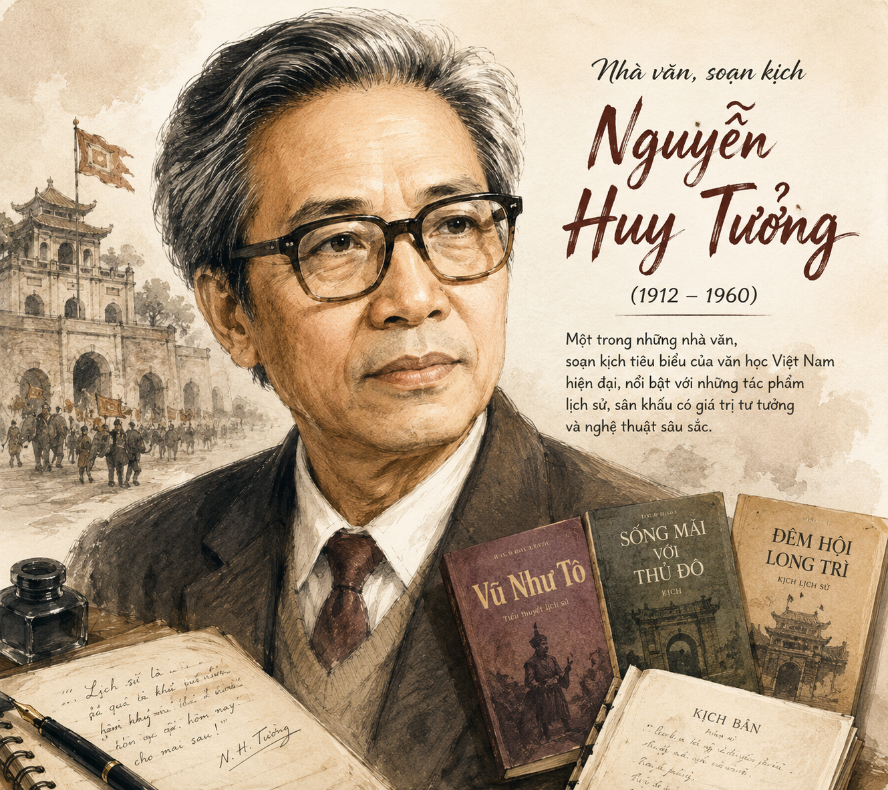
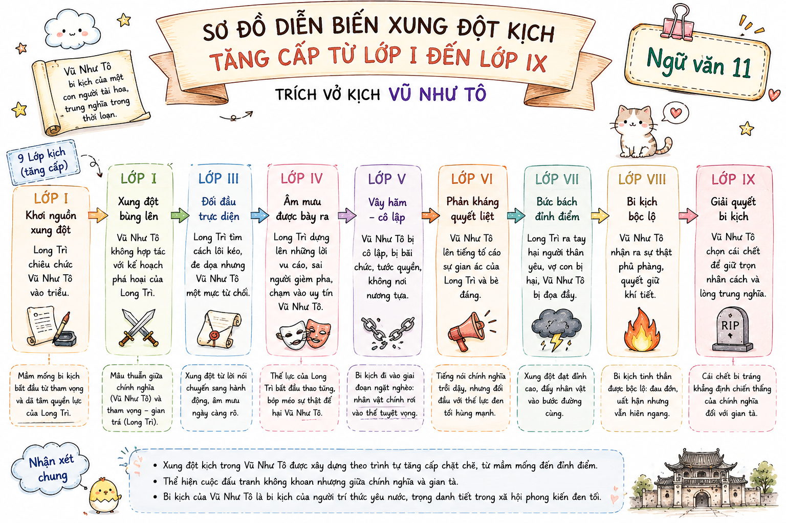

(Trích tác phẩm "Vũ Như Tô" – Nguyễn Huy Tưởng)
"Phải chăng giá trị của nghệ thuật là ở chỗ nó có ích cho đời sống?"

[Hình h1.png: Tác giả Nguyễn Huy Tưởng]• Nguyễn Huy Tưởng (1912 – 1960), quê tại làng Dục Tú, huyện Từ Sơn, tỉnh Bắc Ninh (nay thuộc xã Dục Tú, huyện Đông Anh, Hà Nội).
• Là nhà văn, nhà viết kịch nổi tiếng chuyên khai thác chủ đề lịch sử dân tộc với góc nhìn sâu sắc, giàu tinh thần dân tộc và trăn trở về sứ mệnh nghệ thuật.
• Tác phẩm tiêu biểu: Đêm hội Long Trì (tiểu thuyết, 1942), Vũ Như Tô (kịch lịch sử, 1943), An Tư (tiểu thuyết, 1944), Bắc Sơn (kịch, 1946)...
• Thể loại: Bi kịch lịch sử gồm 5 hồi, viết năm 1941, xuất bản năm 1942.
• Bối cảnh lịch sử: Sự kiện có thật ở Thăng Long đầu thế kỷ XVI (thời Lê Tương Dực).
• Tóm tắt cốt truyện: Vũ Như Tô – một kiến trúc sư tài ba, nhân hậu, bị vua bạo ngược Lê Tương Dực bắt xây Cửu Trùng Đài. Ban đầu ông kiên quyết từ chối, nhưng nhờ Đan Thiềm thuyết phục tận dụng tiền bạc của vua để dựng một công trình vĩ đại cho đất nước, ông đã đồng ý. Việc xây đài làm hao tổn tiền của, sức người, khiến nhân dân lầm than. Phe phản loạn do Trịnh Duy Sản cầm đầu nổi dậy, giết vua, đốt Cửu Trùng Đài và bắt Vũ Như Tô ra pháp trường.
• Vị trí đoạn trích: Nằm ở Hồi V (Một cung cấm) – hồi cuối cùng của bi kịch, thể hiện đỉnh điểm của xung đột và kết cục đau thương.
| Lớp kịch | Nhân vật xuất hiện | Sự kiện chính & Diễn biến |
|---|---|---|
| Lớp I | Vũ Như Tô, Đan Thiềm | Đan Thiềm hốt hoảng báo tin loạn đến nơi, giục Vũ Như Tô trốn. Vũ Như Tô thản nhiên vì tin mình không có tội. |
| Lớp II | Thêm Nguyễn Vũ | Nguyễn Vũ xộc xệch chạy vào, hỏi tin tức hoàng thượng. Đan Thiềm tiếp tục khuyên trốn trong tiếng quân reo dồn dập. |
| Lớp III | Thêm Lê Trung Mại | Lê Trung Mại báo tin Trịnh Duy Sản làm phản, vua Lê Tương Dực bị đâm chết khi chạy loạn. Nguyễn Vũ tự sát. |
| Lớp IV | Thêm Tên Nội Giám | Nội giám báo tin triều đình rối loạn, An Hoà Hầu kéo quân đốt phá kinh thành, thợ xây theo quân phản loạn. |
| Lớp V | Vũ Như Tô, Đan Thiềm | Vũ Như Tô vẫn ngơ ngác không tin thợ xây phản mình. Đan Thiềm tuyệt vọng, nguyện ở lại cùng chịu chết. |
| Lớp VI | Kim Phượng, Cung nữ | Kim Phượng và các cung nữ hoảng loạn tìm đường trốn khi cửa điện bị phá. Đan Thiềm nhận ra đây là đường cùng. |
| Lớp VII | Ngô Hạch, Quân khởi loạn | Quân loạn xông vào, Ngô Hạch hống hách bắt giữ Đan Thiềm và Vũ Như Tô. Đan Thiềm van xin tha cho Vũ Như Tô nhưng vô hiệu. |
| Lớp VIII | Vũ Như Tô, Ngô Hạch, Quân sĩ | Vũ Như Tô đòi gặp An Hoà Hầu để phân trần hoài bão xây Cửu Trùng Đài nhưng bị quân sĩ xỉa xói, sỉ nhục là gian bọ. |
| Lớp IX | Thêm Lũ Quân, Mọi người | Quân sĩ báo tin Cửu Trùng Đài bị đốt cháy thành tro tàn. Vũ Như Tô bừng tỉnh, đau đớn gào khóc và chấp nhận ra pháp trường. |

[Hình h2.png: Sơ đồ diễn biến xung đột kịch tăng cấp từ Lớp I đến Lớp IX]• Nhân dân lao động, thợ xây chịu sưu cao thuế nặng, lao dịch cực khổ, chết vì tai nạn và bệnh tật.
• Hôn quân Lê Tương Dực ăn chơi trác táng, phung phí ngân khố để xây đài xa hoa.
➜ Kết cục: Khởi nghĩa bùng nổ, vua bị giết, triều đình sụp đổ.
• Vũ Như Tô: Khát vọng sáng tạo công trình nghệ thuật vĩ đại "bền như trăng sao", "thách thức với các công trình Trung Hoa".
• Quần chúng: Nghệ thuật đó được xây bằng xương máu, mồ hôi và sự đói khổ của nhân dân.
➜ Bi kịch: Nghệ thuật hoành tráng trở thành kẻ thù trong mắt nhân dân.
• Bản chất: Là thiên tài nghệ thuật, có tâm huyết lớn, sống thanh cao, không hám danh lợi cá nhân.
• Ảo tưởng bi kịch: Nhầm tưởng có thể mượn uy quyền và tiền bạc của bạo chúa Lê Tương Dực để thực hiện hoài bão nghệ thuật cho dân tộc.
• Thái độ trước biến cố: Ngơ ngác, không tin mình có tội ("Tôi làm gì nên tội?", "Tôi xây Cửu Trùng Đài có phải đâu để hại nước?").
• Sự bừng tỉnh muộn màng: Chỉ khi thấy Cửu Trùng Đài cháy thành tro tàn, ông mới cay đắng nhận ra sự sụp đổ hoàn toàn của mộng lớn ("Ôi mộng lớn! Ôi Đan Thiềm! Ôi Cửu Trùng Đài!").
• Người "bệnh nghệ": Thấu hiểu, trân trọng tài năng hiếm có của Vũ Như Tô, coi Vũ Như Tô là "báu vật quốc gia".
• Tỉnh táo trước thực tại: Khác với sự ảo tưởng của Vũ Như Tô, Đan Thiềm sớm nhận ra nguy cơ biến cố và liên tục giục Vũ Như Tô bỏ trốn.
• Sẵn sàng hy sinh: Quỳ lạy van xin quân phản loạn tha cho Vũ Như Tô, nhận hết mọi tội lỗi về mình.
Nhấn vào nút "Xem lời giải / Hướng dẫn" để hiển thị đáp án chi tiết cho các câu hỏi nghiên cứu văn bản.
Câu 1 (Trang 10): Tóm tắt các sự kiện chính trong đoạn trích. Bạn có nhận xét gì về diễn biến của các sự kiện?
Lời giải chi tiết:
• Tóm tắt: Đan Thiềm báo tin loạn lạc và giục Vũ Như Tô trốn (Lớp I-II). Lê Trung Mại và Nội giám báo tin vua bị giết, kinh thành bị đốt (Lớp III-IV). Quân khởi loạn do Ngô Hạch dẫn đầu xông vào bắt Đan Thiềm và Vũ Như Tô (Lớp VI-VII). Vũ Như Tô đòi gặp An Hoà Hầu để phân trần nhưng bị sỉ nhục (Lớp VIII). Cửu Trùng Đài bị đốt, Vũ Như Tô bừng tỉnh đau đớn và bị dẫn ra pháp trường (Lớp IX).
• Nhận xét: Nhịp điệu kịch diễn ra dồn dập, nhanh, gắt gao. Càng về sau không khí càng hỗn loạn, mâu thuẫn đẩy lên đỉnh điểm không thể dung hòa, dẫn đến kết cục thảm khốc mau lẹ.
Câu 2 (Trang 10): Tình huống kịch được miêu tả trong đoạn trích là gì? Trước tình huống đó, mỗi nhân vật đã có phản ứng như thế nào?
Lời giải chi tiết:
• Tình huống kịch: Cuộc nổi dậy của quân lính và nhân dân bùng nổ, triều đình bạo ngược bị sụp đổ, công trình Cửu Trùng Đài bị đe dọa phá hủy.
• Phản ứng của các nhân vật:
- Vũ Như Tô: Ngơ ngác, tin tưởng vào sự quang minh chính đại của mình, không chịu trốn, vẫn nuôi hy vọng hoàn thành Cửu Trùng Đài.
- Đan Thiềm: Sợ hãi cho tính mạng của Vũ Như Tô, van xin ông trốn, sẵn sàng thế mạng để bảo vệ "báu vật đất nước".
- Lê Tương Dực & quan lại: Hoảng loạn, tháo chạy, bị giết hoặc tự sát (Nguyễn Vũ).
- Ngô Hạch & Quân khởi loạn: Hung hãn, căm thù, coi Cửu Trùng Đài là nguồn gốc lầm than và Vũ Như Tô là gian bọ.
Câu 3 (Trang 10): Xung đột chính trong đoạn trích là gì? Xung đột đó được triển khai như thế nào qua các lớp kịch?
Lời giải chi tiết:
• Xung đột giữa Khát vọng nghệ thuật cao siêu, đắt đỏ và Quyền sống, lợi ích thiết thân của nhân dân lao động.
• Triển khai: Ban đầu là tin đồn biến cố nguy cấp (Lớp I-II) ➔ Xung đột nổ ra trực tiếp khi phe phản loạn chiếm ưu thế (Lớp III-V) ➔ Đỉnh điểm là sự giáp mặt giữa phe khởi loạn và Vũ Như Tô, kết thúc bằng việc Cửu Trùng Đài bị đốt cháy (Lớp VI-IX).
Câu 4 (Trang 10): Phân tích diễn biến tâm trạng của Vũ Như Tô được thể hiện trong đoạn trích.
Lời giải chi tiết:
• Giai đoạn 1 (Lớp I - V): Bình tĩnh, thản nhiên, đinh ninh mình "không làm gì nên tội", tin vào sự danh chính ngôn thuận của hoài bão nghệ thuật.
• Giai đoạn 2 (Lớp VII - VIII): Căng thẳng, băn khoăn khi bị bắt nhưng vẫn ngạo nghễ, đòi phân trần với An Hoà Hầu.
• Giai đoạn 3 (Lớp IX): Bàng hoàng, vỡ mộng đau đớn tuyệt vọng khi thấy Cửu Trùng Đài cháy. Ông thốt lên tiếng khóc vĩnh biệt mộng lớn và thản nhiên bước ra pháp trường.
Câu 5, 6, 7 (Trang 10): Ý nghĩa hình tượng Cửu Trùng Đài & Mối quan hệ giữa nghệ thuật và cuộc sống
• Ý nghĩa Cửu Trùng Đài: Biểu tượng cho vẻ đẹp kiệt tác nghệ thuật đỉnh cao, đồng thời là biểu tượng cho sự tổn thất xương máu, mồ hôi của nhân dân.
• Bài học về Nghệ thuật & Cuộc sống: Nghệ thuật không thể tách rời thực tế đời sống; nghệ thuật chân chính phải vị nhân sinh, không thể được xây dựng trên sự đau khổ và mồ hôi nước mắt của nhân dân.
• Lời đề tựa của tác giả: Thể hiện sự cảm thông, băn khoăn và trăn trở sâu sắc của Nguyễn Huy Tưởng đối với bi kịch người nghệ sĩ có tài nhưng tách rời đời sống.
Hãy thảo luận: Vũ Như Tô là người có tội hay có công? Vì sao nhân dân lại căm ghét ông?
Hướng giải quyết:
- Mặt có công/đáng thương: Ông là người nghệ sĩ chân chính, yêu cái đẹp, có hoài bão làm rạng danh đất nước bằng công trình kiến trúc vĩ đại.
- Mặt có tội/đáng trách: Ông mù quáng, xa rời thực tế, vô tình trở thành tay sai cho bạo chúa, vắt cạn sức lực và máu xương của nhân dân lao động trong lúc đất nước đói kém.
Câu trả lời: Đan Thiềm mê đắm cái đẹp và cái tài nghệ thuật đến mức quên cả tính mạng bản thân. Bà tôn thờ tài năng của Vũ Như Tô, sẵn sàng quỳ lạy van xin và chết thay để bảo vệ "báu vật của đất nước".
Theo lịch sử, Lê Tương Dực cho xây Cửu Trùng Đài (còn gọi là Bách Trượng Đài) vào năm 1512. Tác phẩm kịch Vũ Như Tô của Nguyễn Huy Tưởng được đánh giá là một trong những kiệt tác bi kịch hay nhất của sân khấu kịch nói Việt Nam hiện đại.
Viết một đoạn văn nghị luận xã hội (khoảng 150 chữ) bày tỏ suy nghĩ về mối quan hệ giữa hoài bão cá nhân và lợi ích cộng đồng trong xã hội hiện đại ngày nay.
Khi phân tích nhân vật bi kịch như Vũ Như Tô, tránh đánh giá một cách phiến diện một chiều (chỉ kết tội hoặc chỉ ca ngợi), cần thấy rõ tính hai mặt và tính bi kịch lịch sử trong khát vọng của nhân vật.
Trả lời 10 câu hỏi trắc nghiệm để kiểm tra kiến thức bài học!
Câu 1: Tác giả của vở kịch "Vũ Như Tô" là ai?
Câu 2: Đoạn trích "Vĩnh biệt Cửu Trùng Đài" thuộc hồi mấy của vở kịch?
Câu 3: Nhân vật Vũ Như Tô làm nghề gì?
Câu 4: Ai là người đã thuyết phục Vũ Như Tô nhận xây Cửu Trùng Đài?
Câu 5: Nguyên nhân trực tiếp khiến nhân dân và thợ xây căm giận Vũ Như Tô là gì?
Câu 6: Thái độ của Vũ Như Tô khi Đan Thiềm khuyên ông bỏ trốn là gì?
Câu 7: Bi kịch lớn nhất của Vũ Như Tô ở cuối đoạn trích là gì?
Câu 8: Tiếng kêu cuối cùng của Vũ Như Tô "Ôi mộng lớn! Ôi Đan Thiềm! Ôi Cửu Trùng Đài!" thể hiện điều gì?
Câu 9: Tính chất hai mặt của công trình Cửu Trùng Đài là gì?
Câu 10: Tác phẩm kịch "Vũ Như Tô" giúp người đọc rút ra bài học sâu sắc nào về nghệ thuật?
Bài tập 1: Hãy phân tích ý nghĩa lời đề tựa vở kịch của Nguyễn Huy Tưởng: "Than ôi! Như Tô phải hay những kẻ giết Như Tô phải? Ta chẳng biết. Lầm cất hại người, sai nết hại mình. Cầm bút chẳng qua cùng một bệnh với Đan Thiềm."
Lời giải chi tiết:
1. Thắc mắc "Như Tô phải hay kẻ giết Như Tô phải?": Tác giả thể hiện sự băn khoăn trước mâu thuẫn không thể dung hòa. Vũ Như Tô đúng ở khát vọng sáng tạo cái đẹp cho dân tộc, nhưng sai vì xa rời thực tế lầm than của dân. Kẻ giết Vũ Như Tô đúng ở khát vọng đòi quyền sống, nhưng lại hủy hoại một kiệt tác nghệ thuật và một tài năng hiếm có.
2. Cùng một bệnh với Đan Thiềm: "Bệnh" ở đây là "bệnh nghệ" – sự say đắm, tôn thờ cái đẹp nghệ thuật. Nguyễn Huy Tưởng tự nhận mình cũng mang tấm lòng đồng điệu, trân trọng sáng tạo nghệ thuật như Đan Thiềm.
Bài tập 2: So sánh điểm giống và khác nhau trong thái độ, phản ứng của Vũ Như Tô và Đan Thiềm khi biến cố xảy ra trong Hồi V.
Lời giải chi tiết:
• Giống nhau: Cả hai đều trân trọng Cửu Trùng Đài, coi đó là công trình vĩ đại, sẵn sàng hy sinh để bảo vệ hoài bão nghệ thuật.
• Khác nhau:
- Vũ Như Tô: Ảo tưởng, ngơ ngác, tin rằng mình danh chính ngôn thuận nên không chịu trốn, đến phút cuối mới bừng tỉnh khi Cửu Trùng Đài bị đốt.
- Đan Thiềm: Tỉnh táo hơn, sớm nhận ra hiểm họa từ sự căm giận của nhân dân, liên tục hối thúc Vũ Như Tô chạy trốn để bảo toàn tính mạng "báu vật quốc gia".
Bài tập 3: Đánh giá mô hình xung đột bi kịch qua công thức tính chỉ số tác động xã hội giữa Hoài bão Nghệ thuật \( (A) \) và Chi phí Dân sinh \( (C) \): Khi \( A < C \), điều gì sẽ xảy ra đối với tác phẩm?
Lời giải chi tiết:
• Giả sử giá trị hoài bão nghệ thuật là \( A \), chi phí xương máu và sự hy sinh của nhân dân là \( C \).
• Nếu \( A < C \) (Chi phí dân sinh vượt quá giá trị nhân văn mà tác phẩm mang lại cho cộng đồng tại thời điểm đó), mâu thuẫn xã hội sẽ bùng nổ theo phương trình phản ứng cân bằng trạng thái: \( \text{Nghệ thuật xa rời} + \text{Dân khổ} \xrightleftharpoons{} \text{Xung đột bi kịch} \).
• Kết luận: Tác phẩm nghệ thuật dù vĩ đại đến đâu nhưng nếu được xây dựng trên sự bóc lột và nỗi đau khổ của nhân dân thì sẽ bị chính nhân dân phủ nhận và phá hủy.